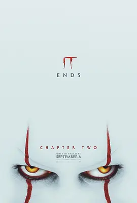

6.5
小丑回魂2
It: Chapter Two
2019
加拿大
评分 6.5
导演:
安德斯·穆斯切蒂
演员:
詹姆斯·麦卡沃伊 / 杰西卡·查斯坦 / 比尔·斯卡斯加德 / 比尔·哈德尔 / 索菲娅·莉莉丝
类型:
剧情,奇幻,恐怖
剧情简介
距离那场1989年的对抗已经过去二十七年，德里小镇依旧被外表平静的生活覆盖着，而童年阴影却始终潜伏在地底深处。成年后的“失败者俱乐部”成员已在各自的城市里找到新的生活轨迹，努力忘记那些年在小镇经历的恐惧。直到麦克独自留守当地，发现小丑的痕迹再次出现，漩涡般的黑暗再度向他们靠拢。召唤电话打破了久违的平静，比利、瑞奇、贝弗莉、本等人带着截然不同的成人心态重返德里。昔日的街道显得陌生又压抑，空气中仿佛藏着他们不愿面对的旧伤。重聚后的他们逐步意识到，小丑这一次不再仅仅用怪诞的外貌震慑，而是精准地渗入每个人心底最软弱的角落，幻化出专属于他们的噩梦，将成年后的不安与童年创伤交织在一起。在麦克的引导下，他们踏入废弃的老屋与下水管道，尝试拼凑出击败小丑的方法。过程中，每个人都必须面对自己曾刻意遗忘的记忆——曾被嘲笑的羞耻、未说出口的情感、以及当年对恐惧近乎窒息般的无力。小镇的角落里，幻影与现实不断重叠，令人难辨真伪，诡异的笑声像潮水般随时可能吞没他们。故事在压迫的氛围中推进，将恐怖与成长的主题紧密缠绕：面对恐惧的过程既是对抗怪物，也是与自己和解的另一种方式。随着团队逐渐凝聚，他们终于愿意跨越各自的伤疤，再一次走向恐惧的源头，只为彻底终结这场延续了几十年的噩梦。